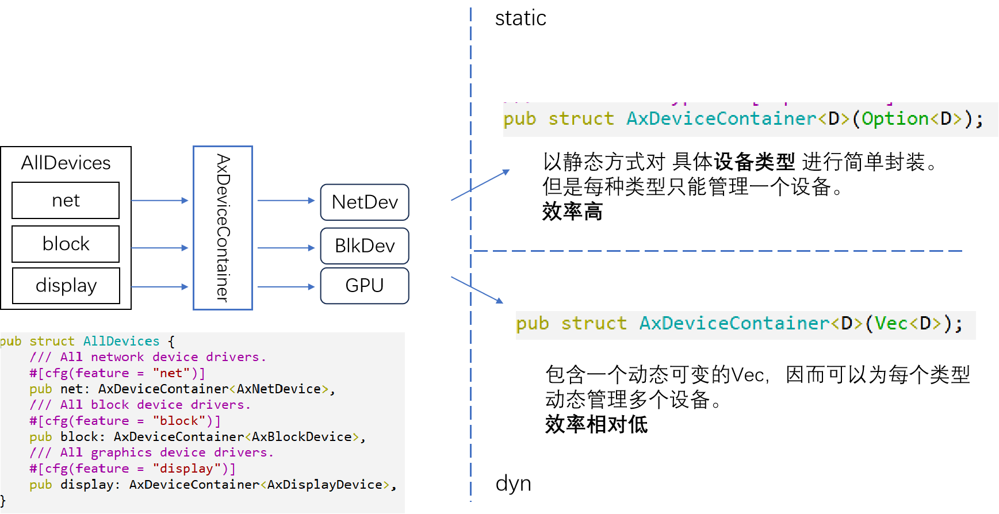
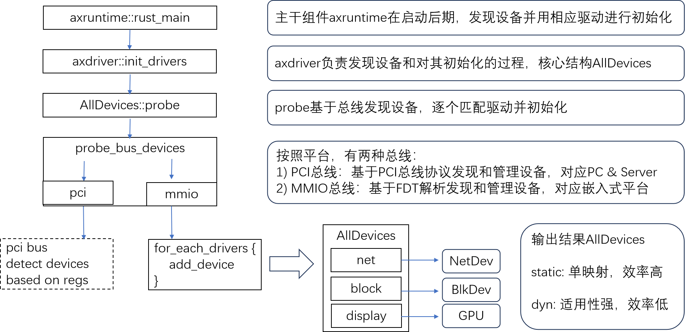
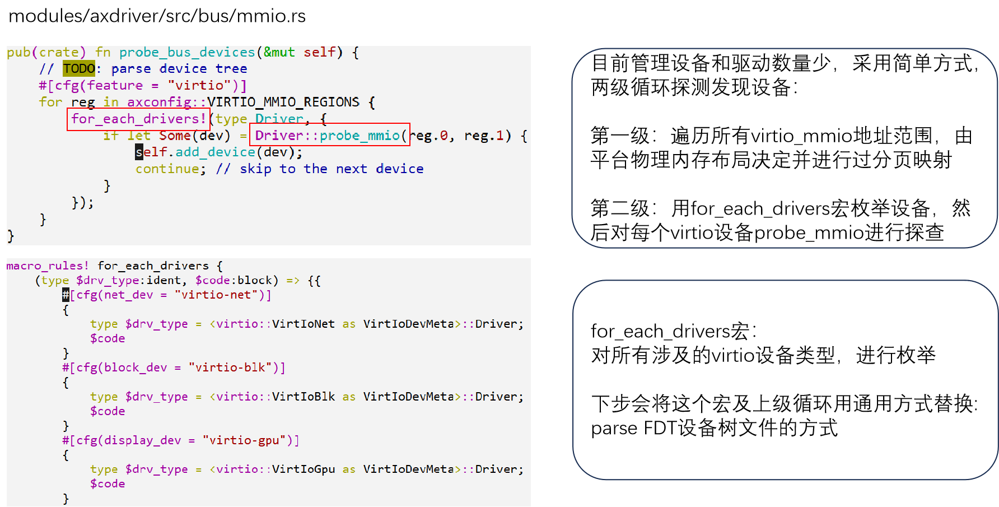

设计与实现
设备管理框架
AllDevices 管理系统所有的设备，为上层的子系统如文件系统 FS、网络协议栈 NET 提供访问服务。
三种设备类型：
设备发现与初始化过程
基于总线发现设备- qemu 平台示例
virtio 设备的 probe 过程
-
qemu 模拟器基于命令行产生设备：
-device virtio-blk-device,drive=disk0 -drive id=disk0,format=raw,file=disk.img -
qemu 将设备 mmio 地址区域映射到 Guest 中；
qemu-virt 平台默认有 8 个区域槽位，通常只有部分会形成映射，其它处于未映射状态，即表现为空设备；
-
virtio-mmio 驱动逐个发请求区探查这些区域槽位；
- 对应映射设备响应请求，返回本设备的类型 ID；
- 没有映射的槽位返回零，表示空设备。
-
virtio-mmio 驱动把 probe 结果报告上层。
virtio 驱动基本模型
virtio 驱动和 virtio 设备交互的两条路：
- 主要基于 vring 环形队列：本质上是连续的 Page 页面，在 Guest 和 Host 都可见可写；
- 中断响应的通道：主要对等待读取大块数据时是有用。